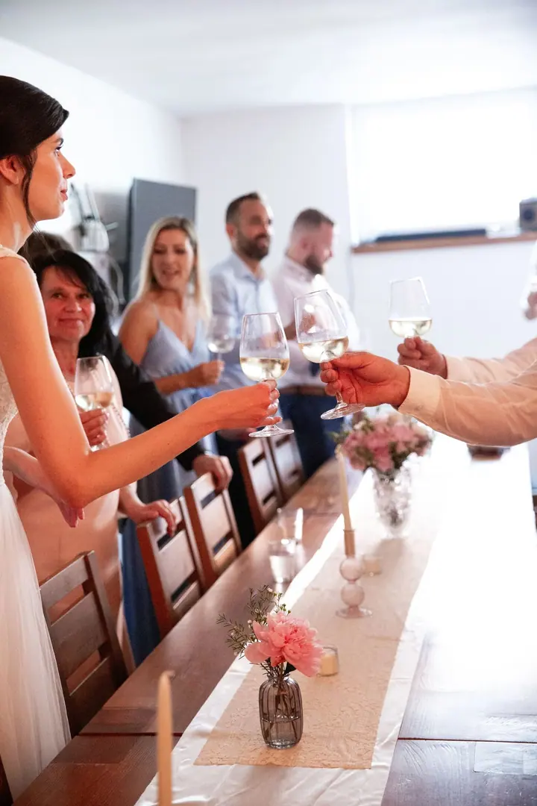
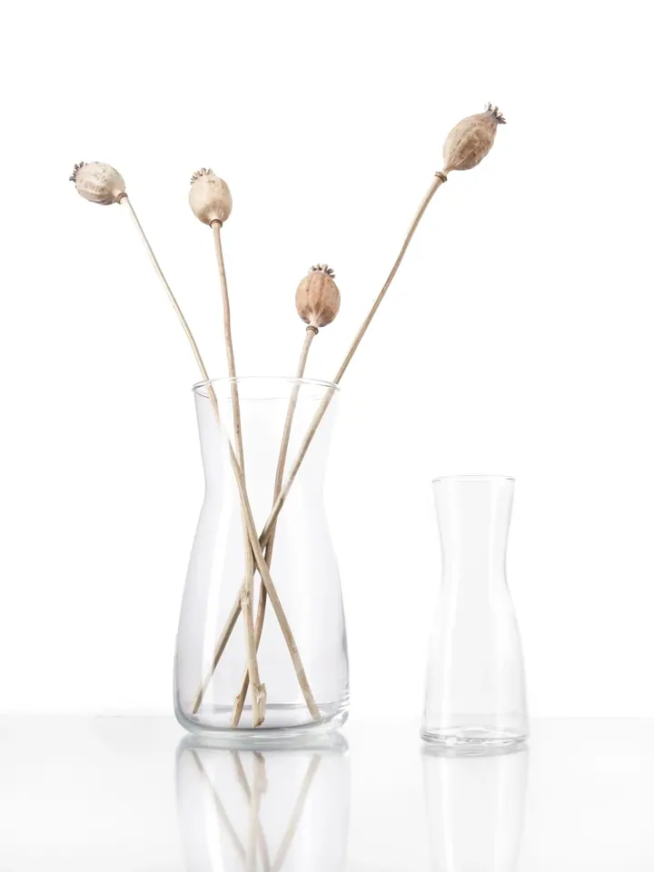
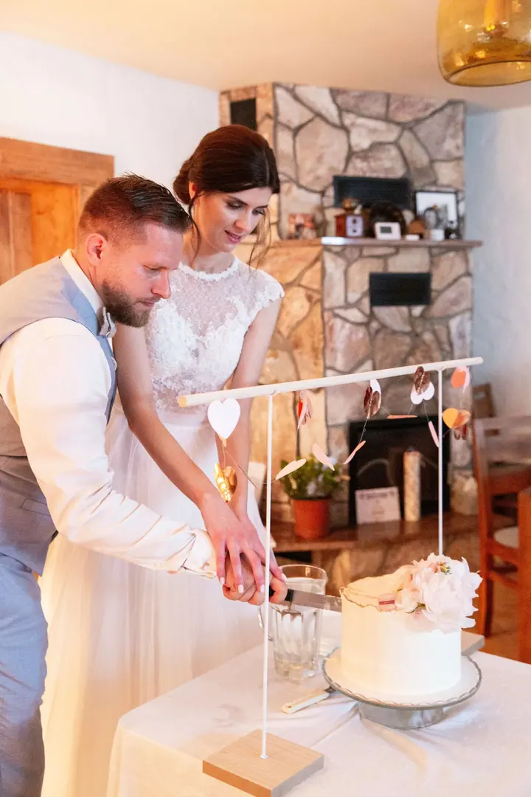
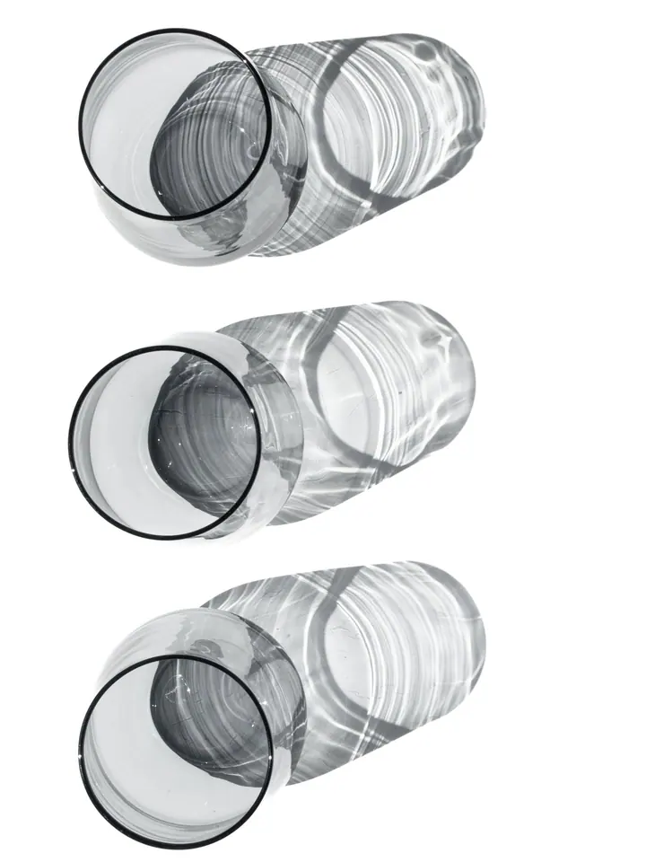
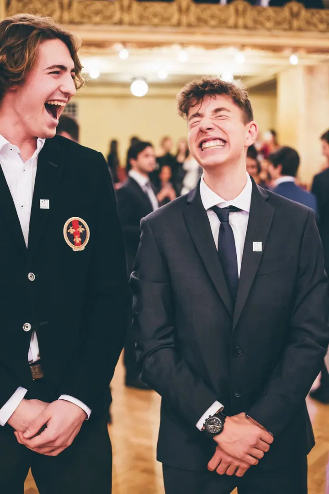
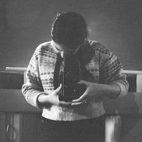

01 / 03
Svatby
Fotím celý svatební den od obřadu a podpisu až po přípitky a krájení dortu. Zajímají mě skutečné chvíle a lidé kolem vás.
Zeptat se na termín→




Svatby a plesy tak, jak proběhly
Zeptat se na termín →(01) Ahoj
Jmenuji se Adéla Vacková, studuji fotografii na vysoké škole a fotím zakázky. Nejčastěji svatby , plesy a společenské akce a také produkty . Ráda vám nafotím den, na který budete chtít vzpomínat.
(02) Co fotím
01 / 03
Fotím celý svatební den od obřadu a podpisu až po přípitky a krájení dortu. Zajímají mě skutečné chvíle a lidé kolem vás.
Zeptat se na termín→02 / 03
Fotím plesy, společenské večery a další akce. Skupinové fotky i spontánní smích na parketu, aby vám z večera zůstala celá atmosféra.
Zeptat se na termín→03 / 03
Fotím produkty na čistém pozadí se světlem, které ukáže materiál i tvar. Fotky se hodí do e-shopu, katalogu i na sociální sítě.
Zeptat se na termín→(04) Postup
Od první zprávy po hotovou galerii.
Krok 1 z 4
Napište mi přes formulář nebo zavolejte. Stačí datum, místo a o jakou akci jde.
Krok 2 z 4
Probereme, co od fotek čekáte, jak bude den nebo večer probíhat a co nesmí chybět.
Krok 3 z 4
Přijedu na místo a fotím nenápadně, aby se lidé mohli chovat přirozeně. U produktů připravím světlo a pozadí podle vašich potřeb.
Krok 4 z 4
Snímky vyberu, upravím a pošlu vám je v online galerii připravené ke stažení.
Smích, přípitky a chvíle mezi tím
(05) Za objektivem
Jmenuji se Adéla Vacková a fotografii studuji na vysoké škole. Při studiu fotím zakázky, takže to, co se ve škole naučím, si hned zkouším v praxi na svatbách, plesech i při focení produktů.
Na svatbách mě baví obyčejné chvíle mezi těmi velkými: přípitek u stolu, podpis protokolu na zahradě, smích při krájení dortu. Na plesech zase energie sálu a lidé, kteří si večer opravdu užívají.
Vedle zakázek se věnuji i volné tvorbě. Díky ní si hraju se světlem, sklem a tvary, a to se pak promítá i do mých produktových fotek.

Adéla
Adéla Vacková · Svatební a eventová fotografka
Hlavně svatby, plesy a další akce a produktovou fotografii. Když máte jiný nápad, napište mi a domluvíme se.
Cena záleží na rozsahu a délce focení. Pošlete mi pár informací o vaší akci a připravím vám nabídku na míru.
Napište mi, kde se vaše akce koná, a domluvíme se na podmínkách dopravy.
Ano, fotím na IČO, takže vám mohu vystavit fakturu, třeba i firmě nebo škole za ples.